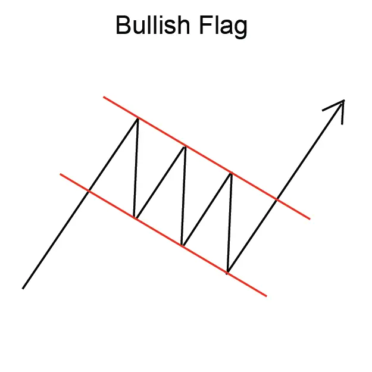
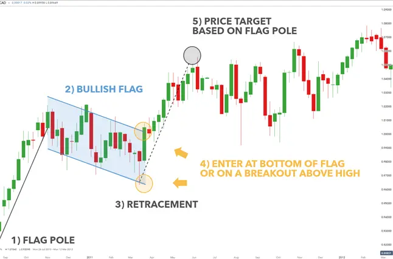

बुलिश फ्लैग पैटर्न एक उठान के बीच एक संक्षिप्त संम्मेलन के द्वारा गठित चार्ट पैटर्न है जो दो
उच्चतमकरण का पुनःमूल्यांकन। फ्लैग पैटर्न आमतौर पर एक झंडा या झंडी की तरह दिखता है, जिससे इसका नाम है।
बुलिश फ्लैग पैटर्न एक मजबूत संकेत देता है और ट्रेडर्स इसे व्यापार के लिए उपयोग करते हैं।
पैटर्न में प्रवेश करने के लिए, ट्रेडर्स आमतौर पर झंडी की उच्चता के समान दूरी पर झंडी के नीचे एक 'ब्रेकआउट' ढूंढ़ते हैं।
झंडी की लंबाई झंडी के नीचे से झंडी के शीर्ष तक ऊंचाई की मात्रा। झंडी की चौड़ाई झंडी के शीर्ष से झंडी के नीचे नीचे की
तरफ झुकें समय की अवधि।
बुलिश फ्लैग पैटर्न स्वस्थ व्यापार नहीं है, लेकिन यह एक हमेशा विश्वसनीय संकेत देता है और ट्रेडर्स इसे बचत के रूप में उपयोग करते
हैं।
